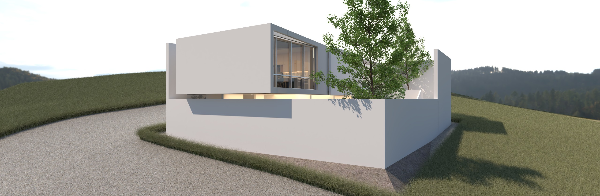
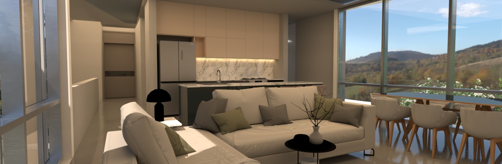
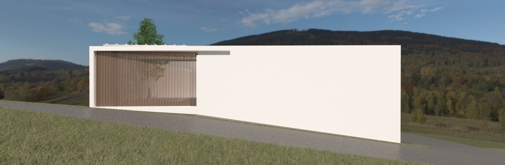

Proyecto Arquitectónico A-1 · Levantamiento Topográfico · 281.30 m²
Lote 8, Manzana 147
Fraccionamiento México, Morelia, Mich.
Expediente digital interactivo del proyecto residencial en Colonia Puerto de Buenavista, Morelia, Michoacán. Incluye recorrido virtual 360° fotorealista sobre la geometría exacta 1:1 en Blender 5 Cycles, maqueta 3D abierta exportable a .GLB, galería de renders, poligonal UTM y planos oficiales en PDF.

Geometría Exacta 1:1 · Blender 5 Cycles 3K
Recorrido Virtual 360° de la Casa
Geometría a escala real
Poligonal y Cuadro de Construcción
Cuadro de Construcción
Área = 281.30 m²| Lado | Rumbo | Dist. (m) | V | UTM X | UTM Y |
|---|
Colindancias y cotas destacadas
- Lado 1–2 (13.06 m): Colinda con Lote 9.
- Lado 2–3 (20.10 m): Colinda con Calle (subtramos 7.38 m + 12.72 m).
- Lado 3–4 (15.07 m): Frente hacia Calle Zacamixtle.
- Lado 4–1 (20.00 m): Colinda con Lote 7 (subtramos 12.79 m + 7.21 m).
Modelo 3D Paramétrico Abierto · Plano A-1
Modelo 3D Abierto y Recorrido de la Casa

El visor 3D interactivo y el recorrido requieren servirse por HTTP/HTTPS (por ejemplo en GitHub Pages o localhost).
Al abrir index.html directamente como archivo local (file://), el navegador bloquea la carga del modelo .glb.
Modelo abierto desde Plano A-1
Toda la casa está modelada en código abierto (casa-l8-model.js) a partir del plano A-1 y los 5 renders. Puedes apagar Azotea o 1ª Planta para inspeccionar cada nivel o exportar el .glb para abrirlo en Blender o FreeCAD.
Visualización arquitectónica
Galería de Renders del Proyecto



Documentación oficial
Planos Arquitectónico y Topográfico (PDF)
Datos de referencia